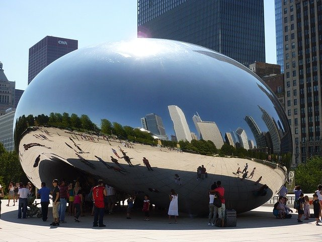
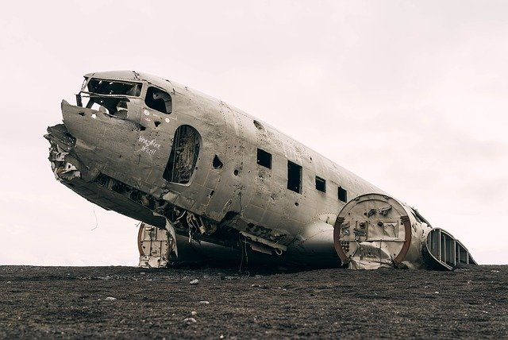
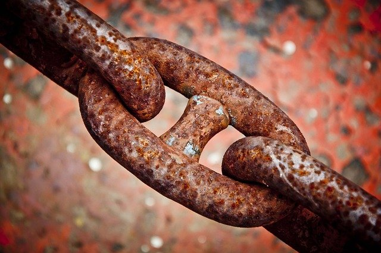

잠시 인류 문명의 발전사를 생각해보자. 인류사에서 혁명이라고 표현되는 대표적인 두 가지 사건이 있다. 바로 신석기 농업혁명과 금속을 대량으로, 능수능란하게 활용하게 된 산업혁명이다. 신석기 혁명으로 인류는 집단 정착생활을 시작하고 결국 피라미드, 만리장성, 파르테논 신전으로까지 이어지는 찬란한 문화를 이루게 되었다. 이후 문명은 완만한 곡선을 그리며 느리지만 점진적으로 발달하다가 1700년대에 이르러 과학과 기술 분야에서 폭발적인 발전을 가져왔다. 결국 현대 문명은 금속에서 전기를 발견하고 다양한 제련법을 개발하면서 산업혁명을 통해 자동차와 비행기뿐 아니라 도시의 거대한 마천루를 만들어냈다.
한마디로 현대 문명은 전적으로 금속에 의해 이루어졌다고 할 수 있다.
21세기의 우리는 스테인리스강으로 만들어진 가위, 하수구, 숟가락, 난로, 에스컬레이터 등에 둘러싸여 있다 보니 녹에 무관심하고, 혹자는 인류가 철을 정복했다고 여기기도 한다. 그러나 우리가 녹에 신경을 덜 쓰며 살게 된 것은 불과 100년밖에 되지 않는다. 대다수 금속은 여전히 잠시만 돌보지 않고 내버려두면 곧바로 녹의 공격에 노출된다(심지어 스테인리스강도 녹이 슨다). 녹은 많은 과학자들과 부식방지전문가들의 활약에도 불구하고 여전히 환경만 조성되면 대상을 가리지 않고 무차별적으로 문명을 공격해온다. 금속은 단단함의 상징이지만 사실은 우리 인간처럼 언젠가는 죽을 수밖에 없는 시한부 삶을 살고 있다. 빨리 늙고, 본질적으로 믿을 수 없는 존재인 것이다.

녹은 토네이도나 산불, 눈보라, 홍수보다 느려서 돌부처처럼 가만히 앉아 계속 쳐다보지 않는 한 그 존재를 알 수 없고 레이더에 잡히지도 않는다. 그러나 녹은 인간에게 그 어떤 자연재해보다 많은 손해를 입힌다. 미국에서 한 해 동안 녹 때문에 발생하는 손실액은 GDP의 3퍼센트인 4,370억 달러다(스웨덴의 GDP보다 많다). 녹은 건강과 안전, 보안, 환경 등 전방위적으로 심각하게 인류를 위협하고 있으며, 미국의 상징인 자유의 여신상을 거의 망가뜨릴 뻔했다. 1,280킬로미터에 달하는 알래스카 횡단 송유관도 녹 때문에 언제 유출 사고가 터질지 알 수 없는 상황이다.
저자는 우리 주위를 온통 둘러싸고 있는 금속 아래에서 시시각각 현대 문명을 위협하는 녹에 대해 다방면으로 조명하면서 경제학적, 사회학적 대처 방법을 생각해보도록 만든다. 현대의 금속 사용량은 날이 갈수록 증가하고 있으며 전 세계 인구 1인당 약 400파운드의 철을 사용한다. 가히 기록적인 수치다. 현자들이 오래전부터 지적했듯이, 문명이 발전할수록 붕괴 가능성도 높아진다. 녹에 대한 방만한 운영은 개념 부족이 게으름이나 자만심 때문은 아닐까? 저자는 그러나 녹은 충분히 방지될 수 있다고 주장한다. 부식방지관리와 비용에 대한 사람들의 인식을 바꾸고 녹과 싸우는 사람들을 지지하면서 환경과 문명에 이로운 쪽으로 개선해나간다면 말이다.
가장 막강하고 가장 오래된 적, 녹과의 기나긴 전쟁
녹으로부터 자유로울 수 있는 곳은 세상 어디에도 없다!
▼ 강인함과 신뢰의 대명사 강철, 그러나 강철도 녹 앞에서는 속수무책이다
녹(rust)은 다리(橋)를 무너뜨리고, 핵발전소의 반응기를 잠식하며, 핵폐기물 용기에 구멍을 내는 등 부지불식간에 우리 목숨을 위협하는 위험한 존재다.
동서 간 냉전이 극으로 치닫던 무렵 창고에 쌓아둔 대다수 핵무기가 녹 때문에 무용지물이 되었고 미국의 가장 큰 송유관이 녹에 점령당했을 때는 오펙(OPEC)의 원유 생산량까지 재조정해야만 했다. 또 녹은 군대에도 침투해 F-16 전투기와 헬리콥터가 공중에서 충돌하게 만들었고, 상업용 비행기가 비행 도중 공중 분해된 사고도 녹 때문에 일어났다. 녹은 컨테이너선의 나사를 망가뜨리고 수백 건에 달하는 맨홀 폭발사건의 주범이기도 하다. 또 세탁기를 폭파시키고 온수기를 지붕 위로 날려버리며 화재 진압용 스프링클러의 노즐을 막아서 피해를 키운다. 녹이 연료 탱크를 공격하면 엔진도 덩달아 피해를 입는다.

온갖 무기들, 자동차 머플러, 고속도로의 가드레일도 녹에게는 속수무책이다. 녹 때문에 리콜된 자동차 대수도 어마어마한 숫자에 이른다. 콘크리트 내부에서도 녹은 암세포처럼 퍼져나간다. 우리나라에서도 설치된 지 20년 이상 지난 상수도의 관로 노후 현상(녹)이 급속도로 진행되어 연간 6059억 원의 돈이 새고 있다고 한다.〈포춘〉지가 선정한 500대 기업 중 녹의 공격에 자유로운 곳은 거의 없다. 2011년, 미국 군대도 군의 부식비용을 계산해봤는데 유지비용의 1/5에 해당하는 총 210억 달러(우리나라 돈으로 약 23조)에 달했다고 한다.
녹으로 인한 피해가 이렇게 심각한데도 현대인들은 녹을 그다지 심각한 재해로 여기지 않는다. 심지어 공학 교수나 관련 학생들도 녹에 대해서 대체로 무관심하며 일반인들은 ‘녹’이나 ‘부식’이라는 단어를 기피하는 경향이 있다. 녹에 관해 언급한 미국 대통령 역시 한 명도 없다. 이유는 녹이 갓 출고된 스포츠카만큼 섹시하지 않기 때문이다. 녹이 모든 것을 무용지물로 만들 수 있는데도 부식 방지 관련 일을 하는 학자나 기술자는 사람들에게 전혀 인정받지 못하는 상황이다.
▼ 최고의 신인 작가가 들려주는 현대 문명의 이면, 녹의 맨얼굴 바로보기
이 책으로 반즈앤노블 서점 ‘최고의 신인 작가’에 선정되기도 한 조나단 월드먼은 읽을수록 웃음을 자아내는 유려하고 유머러스한 문체로 우리가 그동안 전혀 알려고 하지 않았던 녹의 모든 것을 우리에게 적나라하게 알려준다. 현대 문명에서 녹을 방지하려는 노력을 제대로 하지 않는 것은 저자의 말대로 ‘정장을 빼 입고 소나기를 맞으면서 20달러짜리 지폐를 열심히 찢는 행위’와 같을 수 있다. 한쪽에서 아무리 새로운 것들을 만들고 세운다고 한들 다른 한쪽으로는 부식으로 천문학적 비용이 버려지고 있기 때문이다.
저자는 맨 먼저 미국에서 녹과의 정면대결을 선포한 가장 유명한 싸움인 ‘자유의 여신상 복원사업’을 소개한다. 복원된 여신상은 녹과의 싸움에서 인간이 승리를 거둔 대표적 사례지만 녹은 또다시 여신상을 공격해올 것이고 언젠가는 복원사업을 다시 하게 될 수도 있다. 그리고 녹 때문에 골치를 썩였던 로마 시대 장군에서부터 시작해서 금속의 역사를 간략하게 조명하면서, 철을 연구한 사람들을 소개하고 지금은 너무도 당연히 사용하고 있는 녹슬지 않는 스테인리스강이 어떤 우여곡절 끝에 만들어졌는지 그 탄생 비화를 설명한다.
20세기 초만 해도 ‘녹슬지 않는 칼’은 ‘깨지지 않는 유리’나 ‘썩지 않는 나무’, ‘침몰하지 않는 배’처럼 모순되는 단어의 조합으로 여겼다. 스테인리스강의 발명자 해리 브리얼리는 ‘녹’이라는 자연현상을 강제로 없애버렸으니 자연의 섭리를 거스른 반역자인 셈이다.그런 의미에서 캔이야말로 최첨단 금속 제조공학 기술의 집결체라는 것을 알고 있는가? 약 200년 전에 최초로 탄생한 캔은 ‘기적의 용기’로 칭송되었으며 맥주까지 생생하게 보관할 수 있도록 발전했다. 하지만 캔의 현실이 온통 핑크빛인 것만은 아니다. 캔이 만들어지는 과정에서 부식을 방지하기 위해 내부에 코팅을 하는데 여기 사용되는 에폭시의 80퍼센트가 환경호르몬 BPA라고 한다. 우리는 캔 음료와 함께 미량의 환경호르몬을 마시는 셈이다.
녹을 예술로 승화시킨 녹 사진 전문가 이야기도 흥미롭다. 녹이 다양한 색으로 자라 기하학적 분위기를 자아낼 때 가히 예술의 경지에까지 오를 수 있음을 알려준다. 미국 군대는 현재 부식 방지 전쟁 중이다. 국방부 부식관리국의 수장 던마이어는 ‘수리보다 예방이 훨씬 싸게 먹힌다’며 각 부문의 부식비용을 정확히 계산해내고 페인트와 신기술로 부식 방지에 힘써 모든 프로젝트에서 평균 50대 1의 투자 회수율을 보이고 있다.
또 이 책을 읽으면 왜 대다수 부식 방지 전문가들이 콧수염을 기르는지, 또 북반구 최대 금속 시설인 알래스카 횡단 송유관 안을 헤집고 다니는 녹 관리 전문 로봇 스마트피그의 활약상과 요즘 유행하는 다리 건설 자재가 무엇인지도 살펴볼 수 있다.
부식 방지의 미래는 밝다. 점점 더 많은 사람들이 왜 녹을 관리해야 하고 어떻게 부식을 방지하는지에 관심을 갖고 전문 교육도 받고 있기 때문이다. 더불어 던마이어의 부식방지 접근방식은 세계적으로 인정받으며 ‘던마이어 프로세스’라는 용어까지 만들어냈다.
